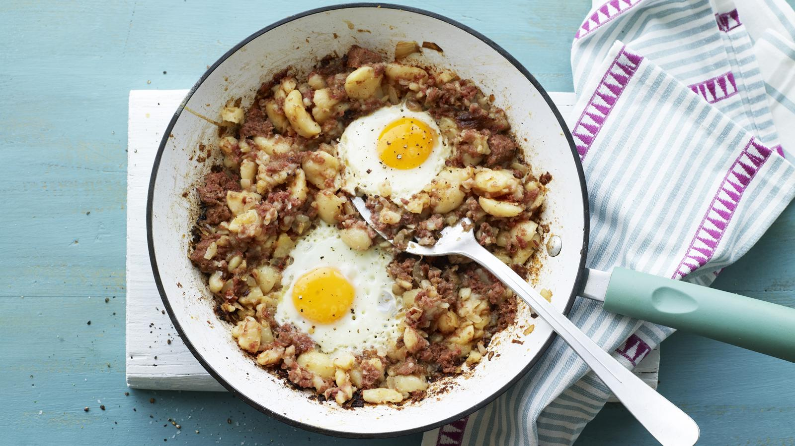

Corned beef hash

Easy corned beef hash
This is about as easy as you can get - cook this corned beef hash in batches and keep it warm in dishes covered with aluminium foil in a low oven.
Ingredients
- 200g/7oz unsalted butter
- 10 onions, sliced
- 7kg/15lb 4oz floury white potatoes, boiled and chopped into cubes
- 10 x 340g/12oz tins corned beef, chopped into cubes
- 150ml/5fl oz Worcestershire sauce
- small bunch curly parsley, chopped
- sea salt and freshly ground black pepper
Steps
- Melt the butter in frying pans until foaming and gently fry the onions for 2-3 minutes, or until softened.
- Add the potatoes and the corned beef and fry for 5-6 minutes, pressing down the mixture every so often with a fish slice, until the mixture is golden-brown and crisp.
- When the corned beef hash is cooked, remove the pan from the heat, sprinkle over the Worcestershire sauce and parsley and season to taste with salt and freshly ground black pepper.